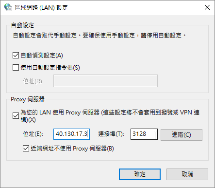

windows network setting
chrome proxy

mde.tw
github.com
portable programming system
login github add repository - README.md
git clone self-repo and CMSimfly
y:\home\.gitconfig
git config --global user.name"50733122"
git config --global user.email: "50733122@gm.nfu.edu.tw"
git config --global http.proxy : http://140.130.17.3:3128
git push Github Pages - setting,url
local python wsgi.py